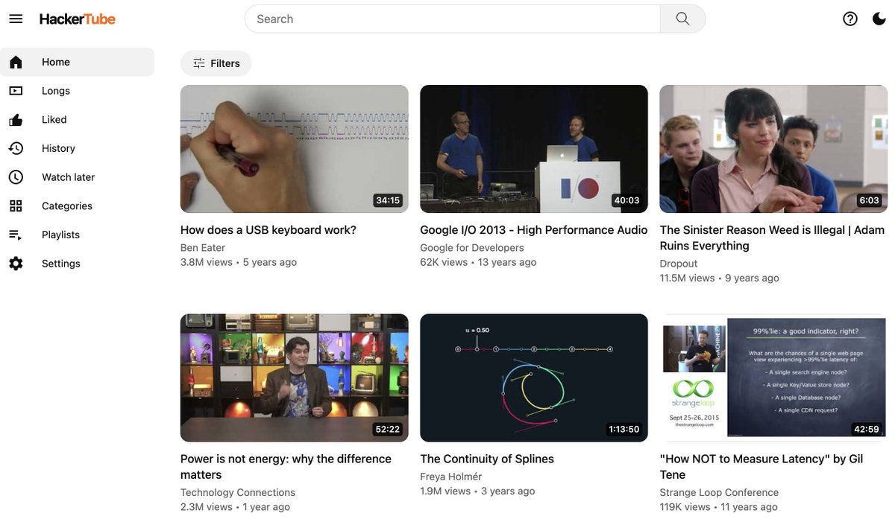

<!doctype html>
<html><head><meta charset="utf-8">
<style>
@font-face{font-family:Serif;src:url(fonts/serif.woff2) format("woff2")}
@font-face{font-family:Serif;font-style:italic;src:url(fonts/serif-i.woff2) format("woff2")}
@font-face{font-family:Geist;src:url(fonts/geist.woff2) format("woff2");font-weight:100 900}
@font-face{font-family:Mono;src:url(fonts/mono.woff2) format("woff2");font-weight:100 900}
html,body{margin:0;background:#000;overflow:hidden}
#stage{position:relative;width:1080px;height:1920px;overflow:hidden;font-family:Geist,sans-serif;-webkit-font-smoothing:antialiased}
#cam{position:absolute;inset:0;transform-origin:540px 860px}
.a{position:absolute;box-sizing:border-box}
.c{left:0;width:1080px;text-align:center}
.serif{font-family:Serif;font-weight:400;letter-spacing:-0.01em}
.mono{font-family:Mono}
.w{display:inline-block;white-space:pre}
.pill{display:inline-flex;align-items:center;gap:14px;border-radius:999px;padding:14px 28px;font-family:Mono;font-size:28px}
#cap{position:absolute;left:0;width:1080px;top:1470px;text-align:center;font-family:Geist;font-weight:700;font-size:62px;letter-spacing:-0.01em}
#cap span.box{display:inline-block;background:rgba(14,13,12,.88);color:#fff;border-radius:22px;padding:14px 30px 18px}
svg{position:absolute;overflow:visible}
</style></head>
<body><div id="stage"><div id="cam"></div><div id="cap"></div></div>
<script src="vo.js"></script>
<script>
// ---------- palette ----------
const IV='#F1EEE7', INK='#171614', MID='#6F6A61', LINE='#DAD5CA', DK='#121110', DK2='#1C1B19', DKL='#2E2C29', OR='#E8662A', ORS='#F7D9C8', GRN='#3E8E5A';
// ---------- math ----------
const clamp=(x,a=0,b=1)=>Math.min(b,Math.max(a,x));
const lerp=(a,b,p)=>a+(b-a)*p;
const eo=x=>x<=0?0:x>=1?1:1-Math.pow(2,-10*x);
const eio=x=>x<=0?0:x>=1?1:x<.5?Math.pow(2,20*x-10)/2:(2-Math.pow(2,-20*x+10))/2;
const sio=x=>x<=0?0:x>=1?1:-(Math.cos(Math.PI*x)-1)/2;
const seg=(t,t0,d,e=eo)=>e(clamp((t-t0)/d));
function hash(n){let x=Math.sin(n*127.1+311.7)*43758.5453;return x-Math.floor(x);}
const fmt=n=>Math.round(n).toLocaleString('en-US');
// ---------- voice timing ----------
const LINES={};for(const l of VO.lines)LINES[l.id]=l;
const S=id=>LINES[id].start, E=id=>LINES[id].end;
function wt(id,i){const l=LINES[id];const w=l.words[Math.min(i,l.words.length-1)];return w?w.s:l.start;}
function wordIdx(id,word){const l=LINES[id];const k=l.words.findIndex(w=>w.w.toLowerCase().replace(/[^a-z0-9]/g,'').startsWith(word));return k<0?0:k;}
const at=(id,word)=>wt(id,wordIdx(id,word));
// ---------- primitives ----------
function rise(t,t0,d=.38,dy=24){const p=seg(t,t0,d);return `opacity:${p.toFixed(3)};transform:translateY(${((1-p)*dy).toFixed(2)}px)`;}
function fade(t,t0,d=.3){return `opacity:${seg(t,t0,d).toFixed(3)}`;}
// words of a phrase appearing at given times
function ws(t,words,times,style=''){return words.map((w,i)=>`<span class="w" style="${rise(t,times[i]??times[times.length-1],.32,20)};${typeof style==='function'?style(i,w):style}">${w}${i<words.length-1?' ':''}</span>`).join('');}
// words appearing at a line's spoken word times (k = first word index in the line)
function spoken(t,id,words,k=0,style=''){return ws(t,words,words.map((_,i)=>wt(id,k+i)-.06),style);}
function A(x,y,css,html){return `<div class="a" style="left:${x}px;top:${y}px;${css}">${html??''}</div>`;}
function C(y,css,html){return `<div class="a c" style="top:${y}px;${css}">${html??''}</div>`;}
function label(t,t0,y,text,col=MID){return C(y,`font-family:Mono;font-size:28px;letter-spacing:.16em;color:${col};${rise(t,t0)}`,text);}
function dotgrid(col){return `<div class="a" style="inset:0;background-image:radial-gradient(${col} 1.6px,transparent 1.6px);background-size:44px 44px;background-position:22px 22px"></div>`;}
const ICON={
 lock:'<rect x="5" y="11" width="14" height="10" rx="2"/><path d="M8 11V7a4 4 0 0 1 8 0v4"/>',
 check:'<path d="M20 6 9 17l-5-5"/>',
 key:'<circle cx="7.5" cy="15.5" r="4.5"/><path d="m10.7 12.3 9.3-9.3M17 6l3 3M15 8l2 2"/>',
 server:'<rect x="3" y="3" width="18" height="8" rx="2"/><rect x="3" y="13" width="18" height="8" rx="2"/><path d="M7 7h.01M7 17h.01"/>',
 globe:'<circle cx="12" cy="12" r="9"/><path d="M3 12h18M12 3a14 14 0 0 1 0 18M12 3a14 14 0 0 0 0 18"/>',
 zip:'<path d="M14 2H6a2 2 0 0 0-2 2v16a2 2 0 0 0 2 2h12a2 2 0 0 0 2-2V8z"/><path d="M14 2v6h6M10 6h1M10 9h1M10 12h1M10 15h1"/>',
 x:'<path d="M5 5l14 14M19 5 5 19"/>',
 user:'<circle cx="12" cy="8" r="4"/><path d="M4 21a8 8 0 0 1 16 0"/>',
 play:'<path d="M7 4l13 8-13 8z"/>',
};
function icon(name,size,col,sw=2){return `<svg viewBox="0 0 24 24" width="${size}" height="${size}" style="position:static;fill:none;stroke:${col};stroke-width:${sw};stroke-linecap:round;stroke-linejoin:round">${ICON[name]}</svg>`;}
function wordmark(size,col=INK){return `<span style="font-family:Geist;font-weight:800;letter-spacing:-0.035em;font-size:${size}px;color:${col}">Hacker<span style="color:${OR}">Tube</span></span>`;}

// ---------- scenes (each starts on its line; the next scene's start ends it) ----------
const SC=[];
function scene(t0,bg,draw,opt={}){SC.push({t0,bg,draw,...opt});}

// 1 · hook: news + authority + stakes, on screen from frame 0
scene(0,DK,(t)=>{
  let h=dotgrid('#232220');
  h+=C(260,`${rise(t,-1)}`,`<span class="pill" style="background:${DK2};color:#bdb7ac;border:1px solid ${DKL}">@karpathy · weekend hack</span>`);
  const w1=['Andrej','Karpathy'];
  h+=C(420,`font-size:100px;color:#fff;line-height:1.05;font-family:Geist;font-weight:700;letter-spacing:-0.03em`,ws(t,w1,[-1,-1]));
  const w2=['just','built','a','better','YouTube.'];
  h+=C(540,`font-size:132px;line-height:1.02;color:#fff`,`<span class="serif">${ws(t,w2,w2.map((_,i)=>wt('l01',2+i)-.08),(i)=>i===4?`font-style:italic;color:${OR}`:'')}</span>`);
  // timer: "in two hours"
  const t2=at('l01','in')-.1, p=seg(t,t2,1.25,sio);
  const secs=p*7200, hh=Math.floor(secs/3600), mm=Math.floor(secs%3600/60), ss=Math.floor(secs%60);
  h+=C(860,`${rise(t,-1)}`,`<div style="display:inline-block;border:1px solid ${DKL};background:${DK2};border-radius:28px;padding:36px 64px">
    <div class="mono" style="font-size:150px;color:#fff;letter-spacing:-.02em;font-variant-numeric:tabular-nums">${hh}:${String(mm).padStart(2,'0')}:${String(ss).padStart(2,'0')}</div>
    <div class="mono" style="font-size:28px;letter-spacing:.16em;color:#9a958b;margin-top:6px">≈ TWO HOURS, START TO LIVE</div></div>`);
  h+=C(1230,`${rise(t,t2+.5)};font-size:30px;color:#8f897f`,`<span class="mono">built with Claude Code · Opus 5.5</span>`);
  return h;
});

// 2 · the problem: the feed
scene(S('l02'),IV,(t)=>{
  const t0=S('l02');let h=dotgrid('#E2DED4');
  h+=label(t,t0,250,'RECOMMENDED FOR YOU');
  const tired=at('l02','tired');
  for(let i=0;i<6;i++){const col=i%2,row=Math.floor(i/2);const x=110+col*440,y=330+row*285;const d=t0+.05+i*.06;
    const dim=seg(t,tired+.1+i*.04,.3);
    const tag=['YOU WON\'T BELIEVE','#1 MISTAKE','SHOCKING','DON\'T DO THIS','GONE WRONG','WATCH TILL END'][i];
    h+=A(x,y,`width:420px;${rise(t,d)};filter:grayscale(${dim}) ;opacity:${(seg(t,d,.3)*(1-.55*dim)).toFixed(3)}`,
      `<div style="height:190px;border-radius:18px;background:${['#E9482B','#F2B705','#2F6FEB','#E9482B','#7B3FE4','#F2B705'][i]};position:relative;overflow:hidden">
        <div style="position:absolute;left:22px;top:22px;font-family:Geist;font-weight:900;font-size:40px;line-height:1;color:#fff;width:300px;text-shadow:0 3px 0 rgba(0,0,0,.35)">${tag}</div>
        <div style="position:absolute;right:24px;bottom:18px;width:90px;height:90px;border-radius:50%;border:8px solid #fff"></div>
        <svg viewBox="0 0 100 60" width="150" style="right:90px;bottom:40px"><path d="M5 50 L70 15 M50 10 L72 14 L62 34" stroke="#fff" stroke-width="9" fill="none" stroke-linecap="round"/></svg></div>
       <div style="height:18px;width:330px;background:${LINE};border-radius:9px;margin-top:20px"></div>
       <div style="height:18px;width:200px;background:${LINE};border-radius:9px;margin-top:12px"></div>`);
  }
  // the verdict
  const rx=at('l02','recom');
  h+=C(1215,`${rise(t,tired)}`,`<span style="display:inline-block;background:${INK};color:#fff;border-radius:999px;padding:18px 40px;font-size:44px;font-weight:600">Optimised for clicks. ${'<span style="color:'+OR+'">Not for you.</span>'}</span>`);
  return h;
},{cap:'l02'});

// 3 · 43M comments, 20 years
scene(S('l03'),DK,(t)=>{
  const t0=S('l03');let h='';
  // scrolling comment rows, three columns, behind
  const scroll=(t-t0)*520;
  let rows='';
  for(let c=0;c<3;c++)for(let r=0;r<26;r++){const id=c*100+r;const y=((r*84-scroll*(1+c*.18))%2184+2184)%2184-140;const wbar=180+hash(id)*160;
    rows+=A(70+c*330,y,`width:300px;height:60px;opacity:.55`,`<div style="display:flex;gap:12px;align-items:center"><span style="color:${OR};font-size:20px">▲</span><div style="height:12px;width:${(wbar*.35)|0}px;background:#3a3834;border-radius:6px"></div></div><div style="height:12px;width:${wbar|0}px;background:#2b2926;border-radius:6px;margin:12px 0 0 32px"></div>`);}
  h+=`<div class="a" style="inset:0;opacity:${seg(t,t0,.4).toFixed(3)}">${rows}</div>`;
  h+=`<div class="a" style="inset:0;background:radial-gradient(ellipse 620px 520px at 540px 760px, ${DK} 45%, rgba(18,17,16,.0) 100%)"></div>`;
  const n0=at('l03','forty')-.1, n1=at('l03','hacker');
  const n=43e6*seg(t,n0,n1-n0+.35,sio);
  h+=label(t,t0,470,'CLAUDE READ','#a19b90');
  h+=C(560,`${rise(t,n0)};font-family:Mono;font-size:156px;color:#fff;letter-spacing:-.04em;font-variant-numeric:tabular-nums`,fmt(n));
  h+=C(760,`${rise(t,n1-.05)};font-size:64px;color:#fff`,`<span class="serif">Hacker News <i style="color:${OR}">comments</i></span>`);
  // 20 years
  const y0=S('l04')-.05, p=seg(t,y0,.9,sio);
  h+=A(140,1000,`width:800px;${fade(t,y0,.2)}`,`<div style="height:4px;background:${DKL};border-radius:2px;position:relative"><div style="position:absolute;left:0;top:0;height:4px;width:${(p*100).toFixed(2)}%;background:${OR};border-radius:2px"></div>${Array.from({length:21},(_,i)=>`<div style="position:absolute;left:${i*5}%;top:-${i%5===0?14:8}px;width:2px;height:${i%5===0?32:20}px;background:${p*100>=i*5?OR:'#47443f'}"></div>`).join('')}</div>`);
  h+=C(1060,`${rise(t,y0+.15)};font-family:Mono;font-size:34px;letter-spacing:.14em;color:#d8d2c7`,`${Math.round(p*20)} YEARS OF THREADS`);
  return h;
});

// 4 · the filter: 43M -> Claude -> 6,454
scene(S('l05'),IV,(t)=>{
  const t0=S('l05');let h=dotgrid('#E2DED4');
  h+=label(t,t0,240,'THE FILTER');
  // top box
  h+=C(320,`${rise(t,t0+.02)}`,`<div style="display:inline-block;background:#fff;border:1px solid ${LINE};border-radius:22px;padding:26px 46px;font-size:42px;color:${INK}"><span class="mono" style="font-weight:600">43,000,000</span> comments</div>`);
  // particles falling into the filter
  let parts='';
  for(let i=0;i<70;i++){const ph=(t*.9+hash(i))%1;const keep=hash(i+7)<.14;const x=540+(hash(i+3)-.5)*560*(1-ph*.85);const y=430+ph*330;
    if(!keep&&ph>.55)continue;
    parts+=`<circle cx="${x.toFixed(1)}" cy="${y.toFixed(1)}" r="${keep?7:5}" fill="${keep?OR:'#B9B3A7'}"/>`;}
  h+=`<svg width="1080" height="1920" style="left:0;top:0;opacity:${seg(t,t0+.1,.4).toFixed(3)}">${parts}
    <path d="M250 440 L830 440 L620 760 L460 760 Z" fill="none" stroke="${LINE}" stroke-width="3" stroke-dasharray="10 10"/></svg>`;
  // Claude node
  h+=C(770,`${rise(t,t0+.15)}`,`<span style="display:inline-flex;align-items:center;gap:16px;background:${INK};color:#fff;border-radius:999px;padding:20px 44px;font-size:44px;font-weight:600"><span style="width:18px;height:18px;border-radius:50%;background:${OR};box-shadow:0 0 0 ${(6+4*Math.sin(t*6)).toFixed(1)}px rgba(232,102,42,.25)"></span>Claude</span>`);
  // the rule
  const r=at('l05','again');
  h+=C(890,`${rise(t,at('l05','keep'))};font-size:38px;color:${MID}`,`keeps a video only if people<br><span style="color:${INK};font-weight:600">recommend it ${ws(t,['again','and','again.'],[wt('l05',wordIdx('l05','again')),at('l05','and')-0.02+0.0,wt('l05',LINES.l05.words.length-1)],`color:${OR}`)}</span>`);
  // arrow down + the count
  const c0=S('l06')-.05, c1=E('l06');
  const cnt=lerp(43e6,6454,seg(t,c0,Math.max(.6,c1-c0-.1),eo));
  h+=C(1050,`${rise(t,c0-.1)};font-family:Serif;font-size:${cnt>99999?170:250}px;line-height:1;height:250px;color:${INK};font-variant-numeric:tabular-nums`,t<c0?'':fmt(cnt));
  h+=C(1310,`${rise(t,c1-.2)};font-family:Mono;font-size:32px;letter-spacing:.14em;color:${OR}`,'VIDEOS THAT KEEP COMING UP');
  return h;
},{cap:'l05'});

// 5 · reveal: HackerTube (the real site)
scene(S('l07'),DK,(t)=>{
  const t0=S('l07');let h=dotgrid('#232220');
  h+=label(t,t0,250,'THIS IS','#a19b90');
  const big=1+.06*(1-seg(t,t0,.6));
  h+=C(320,`${fade(t,t0,.12)};transform:scale(${big.toFixed(4)})`,`<div style="display:inline-block;background:#fff;border-radius:30px;padding:26px 56px">${wordmark(132)}</div>`);
  h+=C(540,`${rise(t,t0+.35)}`,`<span class="pill" style="background:${DK2};color:#fff;border:1px solid ${DKL}">${icon('lock',26,'#9a958b')} hackertube.org</span>`);
  // screenshot in a browser frame, rising
  const p=seg(t,t0+.25,.7);
  h+=A(60,680+(1-p)*120,`width:960px;opacity:${p.toFixed(3)};border-radius:22px;overflow:hidden;background:#fff;border:1px solid ${DKL};box-shadow:0 30px 80px rgba(0,0,0,.5);transform:scale(${(1+.02*seg(t,t0+.4,2.5,sio)).toFixed(4)})`,
    `<div style="height:56px;background:#EDEAE3;display:flex;align-items:center;gap:12px;padding:0 22px">${['#ED6A5E','#F5BF4F','#61C554'].map(c=>`<span style="width:16px;height:16px;border-radius:50%;background:${c}"></span>`).join('')}<span class="mono" style="margin-left:18px;font-size:22px;color:${MID}">hackertube.org</span></div>
     `);
  h+=C(1290,`${rise(t,t0+.6)};font-family:Mono;font-size:24px;color:#8f897f`,'screenshot via @karpathy');
  return h;
},{punch:1.06});

// 6 · no login
scene(S('l08'),IV,(t)=>{
  const t0=S('l08');let h=dotgrid('#E2DED4');
  h+=label(t,t0,250,'01 · NO ACCOUNT');
  const x0=at('l08','login');
  h+=C(330,`font-size:150px;line-height:1;color:${INK}`,`<span class="serif">${spoken(t,'l08',['No','login.'],0,(i)=>i===1?`font-style:italic;color:${OR}`:'')}</span>`);
  // a login form, crossed out
  const p=seg(t,x0+.15,.35);
  h+=C(560,`${rise(t,t0+.05)}`,`<div style="display:inline-block;position:relative;width:560px;background:#fff;border:1px solid ${LINE};border-radius:24px;padding:36px;text-align:left;opacity:${(1-.45*p).toFixed(3)}">
     <div class="mono" style="font-size:24px;color:${MID}">Sign in to continue</div>
     <div style="height:66px;border:1px solid ${LINE};border-radius:12px;margin-top:20px"></div>
     <div style="height:66px;border:1px solid ${LINE};border-radius:12px;margin-top:14px"></div>
     <div style="height:66px;background:${INK};border-radius:12px;margin-top:20px"></div>
     <svg viewBox="0 0 560 330" width="560" height="330" style="left:0;top:0"><path d="M40 40 L520 290" stroke="${OR}" stroke-width="10" stroke-linecap="round" stroke-dasharray="560" stroke-dashoffset="${(560*(1-p)).toFixed(1)}"/></svg></div>`);
  // your history stays here
  const b=at('l08','browser')-.25;
  h+=C(1000,`${rise(t,at('l08','your'))}`,`<div style="display:inline-flex;align-items:center;gap:22px;background:${INK};color:#fff;border-radius:24px;padding:26px 40px;font-size:40px">${icon('lock',40,OR)}<span>History stays <span style="color:${OR}">in your browser</span></span></div>`);
  h+=C(1150,`${rise(t,b)};font-family:Mono;font-size:28px;color:${MID}`,'state: this browser session · no server account');
  return h;
},{cap:'l08'});

// 7 · real frame thumbnails
scene(S('l09'),DK,(t)=>{
  const t0=S('l09');let h='';
  h+=label(t,t0,250,'02 · HONEST THUMBNAILS','#a19b90');
  // a film strip with a playhead running to the middle
  const p=seg(t,t0+.1,.9,eio);
  let frames='';for(let i=0;i<9;i++){const sel=i===4&&p>.98;frames+=`<div style="width:96px;height:64px;border-radius:8px;background:${sel?OR:'hsl('+(20+i*25)+' 12% '+(26+hash(i)*14)+'%)'};${sel?'box-shadow:0 0 0 4px #fff':''}"></div>`;}
  h+=A(70,350,`width:940px;${fade(t,t0,.2)}`,`<div style="display:flex;gap:9px;justify-content:center">${frames}</div>
     <div style="position:relative;height:6px;background:${DKL};border-radius:3px;margin-top:26px"><div style="position:absolute;left:0;top:0;height:6px;width:${(p*50).toFixed(2)}%;background:${OR};border-radius:3px"></div>
     <div style="position:absolute;left:${(p*50).toFixed(2)}%;top:-13px;width:32px;height:32px;margin-left:-16px;border-radius:50%;background:#fff"></div></div>
     <div class="mono" style="display:flex;justify-content:space-between;font-size:24px;color:#8f897f;margin-top:22px"><span>0:00</span><span style="color:${p>.98?'#fff':'#8f897f'}">middle</span><span>end</span></div>`);
  // two cards: theirs vs this
  const c=at('l09','not');
  h+=A(80,640,`width:440px;${rise(t,c)}`,`<div style="height:250px;border-radius:20px;background:#E9482B;position:relative;overflow:hidden;filter:grayscale(${seg(t,c+.5,.3).toFixed(3)})"><div style="position:absolute;left:22px;top:22px;font-family:Geist;font-weight:900;font-size:44px;line-height:1;color:#fff">INSANE<br>RESULT?!</div><div style="position:absolute;right:26px;bottom:26px;width:90px;height:90px;border-radius:50%;border:8px solid #fff"></div></div>
     <div class="mono" style="font-size:26px;color:#9a958b;margin-top:18px;text-decoration:line-through">A/B-tested upload</div>`);
  const f=at('l09','real');
  h+=A(560,640,`width:440px;${rise(t,f)}`,`<div style="height:250px;border-radius:20px;background:linear-gradient(0deg,#3b3530,#3b3530);position:relative;overflow:hidden;box-shadow:0 0 0 4px ${OR}">
       <div style="position:absolute;left:40px;top:70px;width:240px;height:12px;background:#6e665e;border-radius:6px"></div><div style="position:absolute;left:40px;top:100px;width:320px;height:12px;background:#6e665e;border-radius:6px"></div><div style="position:absolute;left:40px;top:130px;width:180px;height:12px;background:#6e665e;border-radius:6px"></div>
       <div class="mono" style="position:absolute;right:16px;bottom:14px;background:rgba(0,0,0,.7);color:#fff;font-size:22px;padding:4px 10px;border-radius:6px">42:59</div></div>
     <div class="mono" style="font-size:26px;color:#fff;margin-top:18px">a frame from mid-video</div>`);
  h+=C(1060,`font-size:84px;line-height:1.05;color:#fff`,`<span class="serif">${ws(t,['What','you','see','is','what','you','get.'],Array(7).fill(f+.35),(i)=>i>=4?`font-style:italic;color:${OR}`:'')}</span>`);
  return h;
},{cap:'l09'});

// 8 · one zip, point your Claude at it
scene(S('l10'),IV,(t)=>{
  const t0=S('l10');let h=dotgrid('#E2DED4');
  h+=label(t,t0,250,'03 · OPEN DATA');
  const z=at('l10','zip');
  h+=C(330,`${rise(t,t0+.05)}`,`<div style="display:inline-flex;align-items:center;gap:30px;background:#fff;border:1px solid ${LINE};border-radius:26px;padding:34px 50px;text-align:left">${icon('zip',96,INK,1.6)}<div><div style="font-size:52px;font-weight:700;color:${INK}">All the data</div><div class="mono" style="font-size:30px;color:${MID};margin-top:6px">${z<=t?'<span style="color:'+OR+'">one .zip file</span>':'comment analysis'}</div></div></div>`);
  // terminal: point your Claude at it
  const p0=at('l10','point')-.05;
  const cmd='make me my own version of this';
  const n=Math.floor(clamp((t-p0-.25)/1.1)*cmd.length);
  const done=at('l10','build');
  h+=A(90,640,`width:900px;${rise(t,p0)};background:${DK};border-radius:24px;padding:34px 40px;font-family:Mono;font-size:34px;line-height:1.6;color:#e9e4da`,
    `<div style="color:#8f897f;font-size:26px">~/hackertube-data</div>
     <div><span style="color:${OR}">claude</span> ❯ ${cmd.slice(0,n)}<span style="opacity:${(Math.floor(t*3)%2&&n<cmd.length)?0:1}">▍</span></div>
     <div style="${fade(t,done,.25)};color:${GRN};margin-top:10px">✓ your own HackerTube</div>`);
  h+=C(1040,`font-size:110px;line-height:1;color:${INK}`,`<span class="serif">${ws(t,['Build','your','own.'],[done-.05,done+.05,done+.15],(i)=>i===2?`font-style:italic;color:${OR}`:'')}</span>`);
  return h;
},{cap:'l10'});

// 9 · his manual work
scene(S('l11'),IV,(t)=>{
  const t0=S('l11');let h='';
  h+=label(t,t0,250,'HIS ONLY MANUAL WORK');
  const items=[['key','An API key','Google Cloud, for YouTube metadata','api'],['server','A server','one VPS box','server'],['globe','A domain','hackertube.org','domain']];
  items.forEach(([ic,a,b,w],i)=>{const ti=at('l11',w)-.08;const ck=seg(t,ti+.2,.25);
    h+=A(120,350+i*200,`width:840px;${rise(t,ti)}`,`<div style="display:flex;align-items:center;gap:30px;background:#fff;border:1px solid ${LINE};border-radius:24px;padding:30px 36px">
      <div style="width:84px;height:84px;border-radius:20px;background:${ORS};display:flex;align-items:center;justify-content:center">${icon(ic,46,OR)}</div>
      <div style="flex:1"><div style="font-size:46px;font-weight:700;color:${INK}">${a}</div><div class="mono" style="font-size:26px;color:${MID};margin-top:4px">${b}</div></div>
      <div style="width:56px;height:56px;border-radius:50%;background:${ck>0?GRN:'transparent'};border:3px solid ${ck>0?GRN:LINE};display:flex;align-items:center;justify-content:center;transform:scale(${(.7+.3*ck).toFixed(3)})">${ck>0?icon('check',34,'#fff',3):''}</div></div>`);});
  h+=C(1000,`${rise(t,E('l11')-.3)};font-size:40px;color:${MID}`,`That's it. <span style="color:${INK};font-weight:600">Three clicks in a browser.</span>`);
  return h;
},{cap:'l11'});

// 10 · Claude did the rest
scene(S('l12'),DK,(t)=>{
  const t0=S('l12');let h='';
  h+=C(250,`font-size:120px;line-height:1;color:#fff`,`<span class="serif">${spoken(t,'l12',['Claude','did','the','rest.'],0,(i)=>i===3?`font-style:italic;color:${OR}`:'')}</span>`);
  const steps=[['update',S('l12')+.6],['secure',at('l12','secured')],['harden',at('l12','hardened')],['deploy',at('l12','deployed')],['optimize',at('l12','deployed')+.45]];
  let rows='';
  steps.forEach(([s,ti],i)=>{const on=t>=ti;const run=t>=ti&&t<ti+.3;
    rows+=`<div style="${rise(t,ti-.15)};display:flex;justify-content:space-between;padding:14px 0;border-bottom:1px solid ${DKL}"><span><span style="color:#8f897f">$</span> ${s}</span><span style="color:${run?'#c9c2b6':GRN}">${run?['⠋','⠙','⠹','⠸','⠼','⠴'][Math.floor(t*20)%6]:'✓ done'}</span></div>`;});
  h+=A(110,480,`width:860px;background:${DK2};border:1px solid ${DKL};border-radius:24px;padding:30px 44px;font-family:Mono;font-size:40px;color:#eee8dd;${fade(t,t0,.2)}`,
    `<div style="font-size:24px;color:#8f897f;margin-bottom:10px">claude · root@vps</div>${rows}`);
  h+=C(1180,`${rise(t,at('l12','deployed')+.5)}`,`<span class="pill" style="background:${OR};color:#fff;font-weight:600">● live at hackertube.org</span>`);
  return h;
},{punch:1.05});

// 11 · weeks -> breakfast
scene(S('l13'),IV,(t)=>{
  const t0=S('l13');let h=dotgrid('#E2DED4');
  const m=at('l13','months'), b=at('l13','breakfast');
  const strike=seg(t,m+.35,.3);
  h+=C(330,`${rise(t,t0)};font-size:44px;color:${MID}`,`Projects that took`);
  h+=C(410,`font-size:170px;line-height:1;color:${INK}`,`<span class="serif" style="position:relative;display:inline-block;${rise(t,m-.08)};color:${strike>0?'#A39D92':INK}">months<span style="position:absolute;left:-4%;top:52%;height:10px;width:${(108*strike).toFixed(1)}%;background:${OR};border-radius:5px"></span></span>`);
  h+=C(640,`${rise(t,at('l13','now'))};font-size:44px;color:${MID}`,`now get done`);
  h+=C(720,`font-size:190px;line-height:1;color:${OR}`,`<span class="serif" style="font-style:italic">${ws(t,['before','breakfast.'],[at('l13','before')-.05,b-.05])}</span>`);
  // a coffee cup line drawing
  const cp=seg(t,b,.6);
  h+=`<svg viewBox="0 0 200 200" width="220" height="220" style="left:430px;top:1140px;opacity:${cp.toFixed(3)}"><path d="M40 80 h100 v50 a50 50 0 0 1 -100 0z M140 95 h18 a18 18 0 0 1 0 36 h-18" fill="none" stroke="${INK}" stroke-width="6" stroke-linejoin="round"/>
    ${[70,90,110].map((x,i)=>`<path d="M${x} 60 c-8 -12 8 -20 0 -34" fill="none" stroke="${MID}" stroke-width="5" stroke-linecap="round" stroke-dasharray="40" stroke-dashoffset="${(40*(1-seg(t,b+.2+i*.1,.5))).toFixed(1)}"/>`).join('')}</svg>`;
  return h;
});

// 12 · the question
scene(S('l14'),DK,(t)=>{
  const t0=S('l14');let h=dotgrid('#1d1c1a');
  const words=['So','what','else','are','we','not','thinking','of?'];
  h+=C(560,`font-size:150px;line-height:1.02;color:#fff;padding:0 70px;box-sizing:border-box`,`<span class="serif">${spoken(t,'l14',words,0,(i)=>i>=5?`font-style:italic;color:${OR}`:'')}</span>`);
  h+=C(1170,`${rise(t,E('l14')-.1)};font-family:Mono;font-size:28px;color:#8f897f;letter-spacing:.06em`,'— Andrej Karpathy');
  return h;
},{drift:.05});

// 13 · end card (holds still)
scene(S('l15'),IV,(t)=>{
  const t0=S('l15');let h=dotgrid('#E2DED4');
  h+=C(300,`${rise(t,t0)}`,`<div style="display:inline-block;background:#fff;border:1px solid ${LINE};border-radius:28px;padding:22px 50px">${wordmark(110)}</div>`);
  h+=C(500,`${rise(t,t0+.1)};font-size:52px;line-height:1.25;color:${INK}`,`<span class="serif">20 years of Hacker News,<br><i style="color:${OR}">boiled down to 6,454 videos.</i></span>`);
  h+=C(700,`${rise(t,t0+.2)}`,`<span class="pill" style="background:${INK};color:#fff">${icon('globe',28,'#fff')} hackertube.org</span>`);
  h+=C(830,`${rise(t,t0+.25)};font-family:Mono;font-size:26px;color:${MID}`,'built by @karpathy with Claude Code');
  const f=at('l15','follow'), s=at('l15','send');
  h+=C(980,`${rise(t,f)}`,`<span style="display:inline-block;background:${OR};color:#fff;border-radius:999px;padding:24px 56px;font-size:46px;font-weight:700">Follow for more</span>`);
  h+=C(1120,`${rise(t,s)};font-size:38px;color:${INK}`,`Send this to a friend who <span class="serif" style="font-style:italic;font-size:50px;color:${OR}">builds</span>`);
  return h;
},{still:true});

// ---------- captions (1-2 words, the current word lit) ----------
function caption(t){
  const sc=SC.filter(s=>s.t0<=t).pop();if(!sc||!sc.cap)return '';
  const l=LINES[sc.cap];if(!l||t<l.start||t>l.end+.25)return '';
  const W=l.words;let k=W.findIndex(w=>t<w.e+.04);if(k<0)k=W.length-1;
  const g=Math.floor(k/2)*2;const grp=W.slice(g,g+2);
  if(t<W[0].s-.05)return '';
  return `<span class="box">${grp.map((w,i)=>`<span style="color:${g+i===k?'#FFB088':'#fff'}">${w.w}</span>`).join(' ')}</span>`;
}

// ---------- seek ----------
const cam=document.getElementById('cam'), cap=document.getElementById('cap'), stage=document.getElementById('stage');
window.DURATION=E('l15')+2.4;
window.seek=function(t){
  let i=0;while(i+1<SC.length&&SC[i+1].t0<=t)i++;
  const sc=SC[i], lt=t-sc.t0, t1=(SC[i+1]?.t0)??window.DURATION;
  stage.style.background=sc.bg;
  // camera: punch-in on the cut, slow drift after (never fully still, except the end card)
  let s=1;
  if(!sc.still){s=1+(sc.punch?sc.punch-1:.035)*(1-eo(clamp(lt/.28)))+(sc.drift??.02)*clamp(lt/Math.max(1,t1-sc.t0));}
  cam.style.transform=`scale(${s.toFixed(5)})`;
  cam.innerHTML=sc.draw(t);
  cap.innerHTML=caption(t);
};
window.CUTS=SC.map(s=>s.t0);
window.ready=document.fonts.ready.then(()=>new Promise(r=>{const im=new Image();im.onload=r;im.onerror=r;im.src='shot.jpg';}));
</script></body></html>
